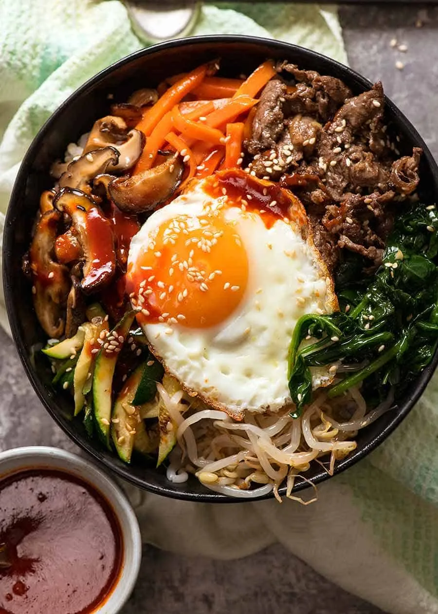

Bibimbap!

Make a Delicious Bibimbap
Bibimbap is one of the most well known Korean dishes. A rice bowl topped with all sorts of seasoned sautéed vegetables, marinated meat (usually beef), a fried egg sunny side up, finished with a sprinkle of sesame and generous dollop of a sweet-spicy-savoury Bibimbap sauce.
Ingredients
- 4 cups cooked white rice
- 4 eggs
- 2 tsp sesame seeds
Korean Beef & Marinade
- 250 beef tenderloin
- 1/4 green apple
- 3 garlic cloves
- 1 tbsp soy sauce
- 1 tbsp honey
- 2 tsp sesame oil
Vegetables
- 2 carrots
- 2 zucchini
- 1 bunch of spinach
- 8 dried shiitake mushrooms
- 2 tsp garlic
- 1/4 tsp fish sauce
- 1.5 tsp soy sauce
Bibimbap Sauce
- 4 tbsp gochujang paste
- 2 tbsp mirin
- 2 tbsp rice vinegar
- 1.5 tsp soy sauce
- 3 tsp white sugar
- 1 garlic clove
- 2.5 tsp sesame oil
Steps
Bibimbap Sauce
- Mix ingredients until sugar is dissolved
Marinated Beef
- Mix the marinade in a bowl, then add beef. Marinate for 30 minutes to overnight.
- Heat 2 tsp oil in a large skillet over high heat. Let excess marinade drip off then add beef. Cook for 3 - 4 minutes until cooked and there's some caramelised bits, then remove from skillet.
Cook Vegetables
- Shiitake: Heat 2 tsp oil oil in a skillet over medium high heat. Cook mushrooms for 2 minutes. Add 1.5 tsp soy, 1/4 tsp sugar, 1/2 tsp of garlic. Stir for 1 minute, then remove.
- Carrot: Add 2 tsp oil into the skillet, cook carrot until just tender (5 to 8 minutes), then remove.
- Zucchini: Cook as with carrot for 4 minutes.
- Spinach: Heat 2 tsp veg with a splash of sesame oil. Saute until starting to wilt. Add 1/2 tsp garlic, and salt to taste, stir, then remove. When cool, squeeze to drain out excess liquid.
Assemble
- Fry eggs in a skillet to your taste.
- Place warm rice in bowls.
- Top with vegetables and beef.
- Sprinkle with sesame seeds, drizzled with sesame oil. Serve with Bibimbap Sauce!